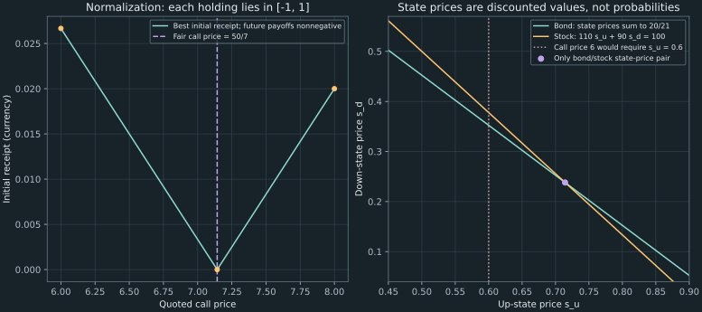

21. Arbitrage detection by linear programming
A call option is offered for six currency units. Its payoff can be reproduced by a bond-and-stock position costing $50/7$, so the call appears too cheap. Buying the call and selling its replica produces an initial receipt of $8/7$, with exactly zero net payoff in either modeled future state. We will express that trade as a linear program, recover its cashflows, and derive a positive-state-price certificate for the correctly priced market.
Source spine: the complete arbitrage lecture 58, Amrit's worked problem in 63, and the arbitrage portions of paired labs 64 and 65. Recording 63's earlier Sara portfolio case is in Chapter 20. The complete two-phase detector, zero-cost counterexample, finite-state theorem proof, incomplete-market example, and public NumPy implementation are independent elaborations.
21.1 Write holdings and cashflows in their proper units Recording 58, 0:16
There are $N$ traded assets and $M$ possible terminal states. Every listed state is economically possible; if physical probabilities are supplied, each state has positive probability. Let $p\in\mathbb R^N$ be today's price vector and let $A\in\mathbb R^{M\times N}$ be the matrix of terminal payoffs. A row of $A$ describes one state, and a column describes one asset. Prices and payoffs are quoted in a common currency, with each asset's number of units specified.
A holdings vector $x\in\mathbb R^N$ contains quantities of the assets, such as bond units, shares, and option contracts. Its initial cost is $p^Tx$ and its terminal-payoff vector is $Ax$. These are holdings, not the initial-wealth fractions used in the preceding portfolio chapters: there is no requirement that their entries sum to one. A negative holding is a short position. The model assumes divisible holdings, unrestricted long/short trading at the same stated prices, no transaction costs, and no intervening cashflows.
The lecture's one-period market has a bond priced at one that pays 1.05 in both states, a stock priced at 100 that pays 110 or 90, and a call with strike 100 that pays 10 or zero. In up/down state order and bond/stock/call asset order,
\[ A=\begin{pmatrix}1.05&110&10\\1.05&90&0\end{pmatrix}, \qquad p=(1,100,c)^T, \tag{21.1} \]where $c$ is the quoted call price. Each call is for the single stock unit represented in this matrix; changing the contract multiplier would change both its payoff column and the holdings interpretation.
An arbitrage is a holdings vector satisfying
\[ p^Tx\leq0,\qquad Ax\geq0,\qquad (-p^Tx,Ax)\ne0. \tag{21.2} \]Vector inequalities apply componentwise. The final condition requires at least one strictly positive cashflow coordinate: either an initial receipt $-p^Tx>0$, or a positive terminal payoff in at least one state. A strategy may earn zero in some states and still be an arbitrage. Requiring a strictly positive payoff in every state would miss valid examples; allowing every cashflow to be zero would incorrectly count the zero portfolio.
Condition (21.2) is state by state. A zero-cost gamble with positive expected payoff can still lose in a possible state and is not an arbitrage by this definition. No physical probabilities are needed to check the inequalities. Probabilities enter later when we interpret a consistent pricing system, not when we replace a loss in one state by an average gain elsewhere.
21.2 Bound a homogeneous search without changing whether arbitrage exists Recording 58, 7:03
A linear program, or LP, optimizes a linear objective subject to affine equalities and inequalities. The lecture proposes the cost-minimization problem
\[ v_1=\min_x p^Tx\quad\text{subject to}\quad Ax\geq0,\qquad -1\leq x_i\leq1\quad(i=1,\ldots,N). \tag{21.3} \]The feasible set contains zero and is closed and bounded, so the continuous objective attains a minimum and $v_1\leq0$. If $v_1<0$, its minimizer is an arbitrage: assembling it receives money initially, while every future state has a nonnegative payoff. This is a sufficient detection result with a concrete holdings witness.
The box bounds normalize position size. In this mathematical market, any finite arbitrage can be multiplied by a sufficiently small positive number so that every holding lies between minus one and one. The signs of all cashflows, including at least one strict gain, survive that scaling. Any positive finite bound for each asset would have the same existence property. The numerical optimum would change with the chosen normalization; it is not an intrinsic unlimited profit amount or a realistic collateral limit.
Without the box, a negative-cost arbitrage makes cost minimization unbounded below: multiplying it by $\alpha\to\infty$ sends $p^T(\alpha x)$ to negative infinity while preserving nonnegative future payoffs. This statement specifically concerns negative initial cost. A zero-cost arbitrage with positive future payoffs does not by itself make the initial-cost objective negative or unbounded.
Unlike a variance objective, the LP has no quadratic curvature to select a unique solution. Several holdings vectors can share the best value. A bounded nonempty polytope nevertheless has an optimal extreme point, also called a vertex, at which enough independent constraints bind to isolate the point. A small teaching implementation can enumerate candidate active bases and compare their feasible objective values. Large LP solvers use more effective algorithms; vertex enumeration is not the definition of linear programming.
21.3 Repair the zero-cost blind spot Recording 58, 8:03
The converse “$v_1=0$ implies no arbitrage” needs care. Consider two state claims with payoff matrix $A=I_2$ and price vector $p=(1,0)^T$. Nonnegative future payoffs require $x_1,x_2\geq0$, so the minimum initial cost is zero. Yet $x=(0,1)^T$ is a free claim paying $(0,1)^T$. It is an arbitrage under (21.2). The initial-cost objective cannot distinguish this trade from doing nothing.
Add a second bounded LP that searches for a positive future payoff while ruling out an initial payment:
\[ v_2=\max_x \mathbf1_M^TAx\quad\text{subject to}\quad Ax\geq0,\quad p^Tx\leq0,\quad -1\leq x_i\leq1. \tag{21.4} \]Here $\mathbf1_M$ is the vector of $M$ ones. Its objective is the sum of terminal payoffs across the modeled states, used only to detect whether a nonnegative payoff vector is nonzero. It is not an expectation: no state probabilities are supplied by the sum. The feasible set again contains zero, so $v_2\geq0$.
In exact arithmetic with exact optimization, arbitrage exists if and only if $v_1<0$ or $v_2>0$. One direction follows immediately from either LP's constraints. For the converse, scale any arbitrage into the box. If its initial cost is negative, it makes $v_1<0$. If its initial cost is zero, at least one future payoff must be positive, so its nonnegative payoff sum makes $v_2>0$. These exhaust definition (21.2).
For the state-claim counterexample, the second optimum is one, attained by $(0,1)^T$, while the first optimum is zero. Thus both phases are useful even in a tiny market. In the source's correctly priced bond/stock/call case, zero numerical LP values will be accompanied below by a separate strictly positive state-price certificate. That certificate supplies the mathematical no-arbitrage conclusion that a rounded zero output alone cannot establish.
Floating implementations need tolerances for feasibility and strict gains. A cost near $-10^{-16}$ from a solve with roundoff is not automatically a trade earning that amount. The public code reports raw costs and state payoffs and says “none detected at tolerance” when its numerical search finds no qualifying candidate. The exact algebraic certificates for the source examples are established separately in the text.
21.4 Recover the LP trade by reversing a replica Recording 58, 8:55 Recording 64, 23:50
First price the call by replication. Let $b$ be bond units and $h$ stock shares in a portfolio with the call's terminal payoff. The two equations are $1.05b+110h=10$ and $1.05b+90h=0$. Subtracting gives $20h=10$, so $h=1/2$ and $b=-300/7$. Its initial cost is $b+100h=50/7$. If the call traded at a different price, the call and its identical-payoff replica would have inconsistent prices.
When the quoted call price is six, buy one call and take the negative of the replica. The holdings are
\[ x_{\rm cheap}=(300/7,\,-1/2,\,1)^T. \]The resulting cashflow table is exact. A positive initial cashflow is a receipt, so it equals the negative of the initial cost.
| Position | Initial cashflow | Up-state payoff | Down-state payoff |
|---|---|---|---|
| $300/7$ bond units | $-300/7$ | 45 | 45 |
| Short $1/2$ stock share | 50 | −55 | −45 |
| One call | −6 | 10 | 0 |
| Total | $8/7$ | 0 | 0 |
The initial receipt is $50/7-6=8/7$, with no terminal obligation in either state. The two future payoffs cancel because the replica was built to match them, not because of a particular probability forecast.
This trade lies outside the unit box because its bond holding exceeds one. Multiplying it by $7/300$ gives
\[ \widehat x=(1,\,-7/600,\,7/300)^T,\qquad p^T\widehat x=-2/75=-0.026666666667,\qquad A\widehat x=0. \]The executed first LP returns this normalized optimum at the source's cheap price. Scaling it back to one call gives the preceding table. The small normalized receipt and the larger one-call receipt are the same direction in different sizes; confusing their units explains neither a new strategy nor a different profit opportunity.
If instead the call price were eight—an additional teaching case—sell the call and buy the replica. The holdings are $-x_{\rm cheap}$, its future payoff is still zero, and its initial cost is $50/7-8=-6/7$. The direction of the arbitrage changes when the call crosses its replication price.
Figure 21.1 varies the quoted call price while keeping the payoff matrix fixed. The reported receipt is the optimum under the declared position box. Those bounds matter to its magnitude; they are not exchange trading limits or a claim of scalable liquidity.

21.5 Price every traded payoff with a strictly positive state-price vector Recording 58, 22:03
A state price $s_i$ assigns today's value to one currency unit paid only in terminal state $i$. Such a state claim need not itself be traded; the vector can describe a consistent extension of prices to state-contingent payoffs. A state-price vector $s\in\mathbb R^M$ prices the traded assets consistently when
\[ A^Ts=p. \tag{21.5} \]Strict positivity means $s_i>0$ for every economically possible state. It immediately supplies a no-arbitrage certificate. For any holdings $x$, consistency gives $p^Tx=s^TAx$. If $Ax\geq0$ and is nonzero, its positive state-price weighted sum is strictly positive, contradicting the nonpositive-cost requirement of an arbitrage. If $Ax=0$, consistency instead forces cost zero, ruling out a negative-cost zero-payoff trade. Thus (21.2) is impossible.
The same reasoning implies the law of one price: two attainable identical payoff vectors must have identical prices. Otherwise buy the cheaper portfolio and sell the dearer, receiving money initially and cancelling every future payoff. The law of one price alone is weaker than no arbitrage. In the free-state-claim counterexample, each payoff has a well-defined linear price, yet a nonzero nonnegative payoff has price zero. Strictly positive state prices rule out that possibility; merely nonnegative ones do not.
For the correctly priced lecture market, the bond and stock impose
\[ 1.05(s_u+s_d)=1,\qquad 110s_u+90s_d=100. \]Solving gives $s_u=5/7$ and $s_d=5/21$, both strictly positive. The call's consistent price is then $10s_u+0s_d=50/7$. At a quote of six, its payoff column would require $s_u=0.6$, contradicting the pair already fixed by bond and stock. This is the dual pricing explanation of the explicit arbitrage trade.
A state-price vector is not generally a probability vector. Suppose a bond costs $B_0>0$ and pays the same amount $B_1>0$ in every terminal state. Its pricing equation gives $\sum_i s_i=B_0/B_1=:D$, where $D$ is the one-period discount factor. Define the risk-neutral probabilities $Q_i=s_i/D$. They are positive and sum to one, and (21.5) becomes
\[ p_j=D\sum_{i=1}^M Q_iA_{ij}=D\,E_Q[A_{\cdot j}]. \tag{21.6} \]In the lecture market, $D=20/21$ and $(Q_u,Q_d)=(3/4,1/4)$. The discounted expected stock payoff is therefore $D[(3/4)110+(1/4)90]=100$. This reproduces the risk-neutral pricing calculation of Chapter 8 and explains its relation to a state-price certificate.
If physical probabilities $\pi_i>0$ are separately specified, a stochastic discount factor is the positive random variable with state values $m_i^{\rm sdf}=s_i/\pi_i$. Then $p_j=E_\pi[m^{\rm sdf}A_{\cdot j}]$. State prices already contain the probability weighting; the discount factor random variable divides that weighting out. The normalized $Q_i$, the physical $\pi_i$, and the state prices $s_i$ are different objects. None of these formulas says that the physical probability of an up move is three quarters.
The finite one-period statement is given in Brunnermeier's Princeton Eco 525 notes, slides 1-39 through 1-42. Kogan's MIT 15.450 lecture, printed slides 10–14, distinguishes a state-price density from unweighted state prices and connects positivity to no arbitrage. We have proved the certificate direction directly; the finite converse is next.
21.6 Prove the finite-state converse by a closest-point argument
The finite fundamental theorem of asset pricing says that, for this unrestricted one-period market, no arbitrage is equivalent to the existence of $s>0$ satisfying (21.5). We have proved that such prices exclude arbitrage. To prove their existence from no arbitrage, collect all initial receipts and terminal payoffs into one linear map:
\[ K=\begin{pmatrix}-p^T\\A\end{pmatrix}\in\mathbb R^{(M+1)\times N}, \qquad \mathcal L=\{Kx:x\in\mathbb R^N\}. \]The set $\mathcal L$ is the subspace of attainable cashflow vectors. No arbitrage means $\mathcal L\cap\mathbb R_+^{M+1}=\{0\}$, where $\mathbb R_+^{M+1}$ is the nonnegative orthant. In particular, $\mathcal L$ is disjoint from the unit simplex $\mathcal C=\{z:z\geq0,\mathbf1_{M+1}^Tz=1\}$. This simplex is an auxiliary normalization of cashflow directions, not a probability model.
Let $P_{\mathcal L}$ denote Euclidean orthogonal projection onto $\mathcal L$, obtained by projecting onto an orthonormal basis of that subspace. Every finite-dimensional subspace is closed. The continuous squared-distance function $\|(I-P_{\mathcal L})z\|^2$ therefore attains a minimum on the compact simplex $\mathcal C$. Let its minimizer be $z_0$, let $\ell_0=P_{\mathcal L}z_0$, and define $y=z_0-\ell_0$. The minimum distance is strictly positive: otherwise $z_0$ would belong to both sets. Thus $y\ne0$, and by projection $y$ is orthogonal to $\mathcal L$.
For any $z\in\mathcal C$, the line segment $z_0+t(z-z_0)$ stays in $\mathcal C$ for $0\leq t\leq1$. Its squared distance cannot decrease to first order at $t=0$, giving
\[ y^T(z-z_0)\geq0. \]Here the gradient of squared distance is $2(I-P_{\mathcal L})z_0=2y$. Also $y^Tz_0=y^T(\ell_0+y)=\|y\|^2$, since $y\perp\ell_0$. Choose $z$ to be each coordinate unit vector, all of which belong to $\mathcal C$. We obtain
\[ y_i\geq\|y\|^2>0,\qquad i=0,\ldots,M. \]This constructs a strictly positive linear functional orthogonal to every attainable cashflow. Since every column of $K$ lies in $\mathcal L$, $K^Ty=0$. Splitting $y=(y_0,y_{\rm future})$ into its initial and terminal coordinates gives $-py_0+A^Ty_{\rm future}=0$. Divide by the strictly positive $y_0$ and set $s=y_{\rm future}/y_0$. Then $s>0$ and $A^Ts=p$, exactly the required state-price vector.
The proof uses only finite-dimensional projection, compactness, and a one-sided derivative along a feasible segment. It explains the geometric alternative: either an attainable nonzero nonnegative cashflow exists, or a strictly positive pricing functional annihilates every attainable net cashflow. It also explains why completeness is not needed for the existence statement. Infinite-state or continuous-trading versions need additional hypotheses and are not established by this finite proof.
21.7 Use completeness for uniqueness, not for the existence of pricing
A finite market is complete if every terminal payoff vector $g\in\mathbb R^M$ can be replicated: there is an $x$ with $Ax=g$. Equivalently, the columns of $A$ span $\mathbb R^M$, or $\operatorname{rank}(A)=M$. The bond and stock columns in (21.1) already span its two states, because the stock payoffs differ while the bond payoffs are equal. The call is redundant for spanning, though its quote can still introduce an inconsistency.
Under no arbitrage, completeness is equivalent to uniqueness of the positive state-price vector. If $A$ has full row rank, $A^T$ is injective, so two vectors satisfying $A^Ts=p$ must coincide. Conversely, if the rank is smaller than $M$, choose a nonzero $v_s\in\ker A^T$. Starting from a positive state-price vector $s$, sufficiently small positive $\epsilon$ makes both $s+\epsilon v_s$ and $s-\epsilon v_s$ remain strictly positive. Both price all assets identically and are distinct. Finite state dimension ensures that a single small enough $\epsilon$ protects every component.
Uniqueness of state prices does not imply uniqueness of the replicating holdings when redundant assets are present. Several portfolios can generate the same payoff; no arbitrage makes their prices agree. Completeness concerns whether every payoff is attainable, while redundancy concerns whether holdings can differ without changing a payoff.
For an original incomplete-market example, take three states and only a bond and a stock:
\[ A_0=\begin{pmatrix}1&0\\1&1\\1&2\end{pmatrix},\qquad p_0=(1,1)^T. \]The pricing equations are $s_1+s_2+s_3=1$ and $s_2+2s_3=1$. Thus all strictly positive solutions have the form $s=(a,1-2a,a)^T$ with $0<a<1/2$. Every such vector certifies no arbitrage, even though the two-dimensional payoff span does not cover all three states. The prices alone leave a family of risk-neutral probabilities here; the bond discount is one.
Now add a claim paying $g=(0,0,1)^T$. It is not replicable by the original two assets: a payoff $\alpha(1,1,1)+\beta(0,1,2)$ that is zero in the first two states must have $\alpha=\beta=0$, and hence cannot pay one in the third. Its consistent price under a state-price vector is $s^Tg=a$. The exact arbitrage-free extension prices form the open interval $(0,1/2)$.
The strict endpoints matter. At price zero, the claim can be bought for free and pays positively in the third state. At price $1/2$, buy half a stock and sell one claim: initial cost is zero, and the terminal payoff is $(0,1/2,0)^T$, positive only in the middle state. Both are arbitrages that a nonnegative-but-not-strict state-price vector would fail to exclude. For an interior price, the extended market has a strictly positive state-price vector and no arbitrage. Thus an interval of plausible quotes is not automatically closed at its edges.
Brunnermeier's slides 1-42–1-43 illustrate multiple state prices in an incomplete payoff space. The rank/null-space proof and three-state claim here make that distinction computationally explicit. No-arbitrage guarantees at least one positive pricing rule; completeness determines whether that rule is unique.
21.8 Reproduce the complete monsoon-state worked problem Recording 63, 10:00
Amrit's example uses a different bond price and a different season-dependent stock. In good/poor monsoon order, its payoff matrix and price vector are
\[ A_{\rm A}=\begin{pmatrix}1&100&20\\1&60&0\end{pmatrix}, \qquad p_{\rm A}=(0.92,80,c_{\rm A})^T. \]The call strike is 80. The bond pays one in either state, so its one-season gross return is $1/0.92$, and its discount factor is 0.92. A season has not been identified with a year; no annualization is implicit.
Replicating the call with $b_{\rm A}$ bond units and $h_{\rm A}$ shares requires $b_{\rm A}+100h_{\rm A}=20$ and $b_{\rm A}+60h_{\rm A}=0$. Subtraction gives $h_{\rm A}=1/2$, then $b_{\rm A}=-30$. The replica costs $-30(0.92)+(1/2)80=12.4$.
The state-price route gives the same result independently. The equations $s_{\rm good}+s_{\rm poor}=0.92$ and $100s_{\rm good}+60s_{\rm poor}=80$ yield $(s_{\rm good},s_{\rm poor})=(0.62,0.30)$. Both are positive, and the call price is $20(0.62)=12.4$. Dividing by the discount gives risk-neutral probabilities $(31/46,15/46)$, approximately $(0.673913043478,0.326086956522)$. These probabilities need not be meteorological forecasts.
At the source's cheap quote $c_{\rm A}=11.5$, buy the call and sell its replica. The resulting holdings are $(30,-1/2,1)$:
| Position | Initial cashflow | Good-monsoon payoff | Poor-monsoon payoff |
|---|---|---|---|
| 30 bond units | −27.6 | 30 | 30 |
| Short $1/2$ share | 40 | −50 | −30 |
| One call | −11.5 | 20 | 0 |
| Total | 0.9 | 0 | 0 |
The initial cost is $-0.9$, equivalently a positive receipt of 0.9. The share position is negative one half, as the two state equations verify. Multiplying the holdings by $1/30$ fits the unit box: $(1,-1/60,1/30)$ has initial cost $-0.03$ and zero terminal payoffs. The executed LP reproduces that normalized cost. At the fair price 12.4, the positive state-price vector instead certifies no arbitrage.
The worked problem illustrates three complementary checks: replication constructs an explicit trade, the LP searches over admissible holdings, and state prices certify consistency when no trade exists. A solver can return a holdings witness as well as a detection value; it is not restricted to answering only whether an opportunity exists. Each route checks a different part of the calculation, making their agreement more informative than repeating one formula in several cells.
21.9 Implement the same LP in three explicit representations Recording 64, 23:50 Recording 65, 23:01
The official R lpSolve manual, pp. 2–3, specifies row constraints and assumes every decision variable is nonnegative. Directly supplying signed holdings would therefore change the admissible trades. Split them as $x=u-v$ with $u,v\geq0$. The unit box can be represented by $u_i+v_i\leq1$. This is equivalent after projection to $|x_i|\leq1$: one direction follows from $|u_i-v_i|\leq u_i+v_i$; the converse chooses $u_i=(x_i)_+$ and $v_i=(-x_i)_+$.
Using the ordered decision vector $(u,v)\in\mathbb R^{2N}$, the initial-cost objective has coefficients $(p,-p)$, the payoff matrix is $[A,-A]$, and the pair-bound matrix is $[I_N,I_N]$. The following complete R translation shows both phases for the already specified arrays. It is documentary; no local R execution is claimed.
two_phase <- function(A, p) {
M <- nrow(A)
N <- ncol(A)
cost <- c(p, -p)
H <- rbind(cbind(A, -A), cbind(diag(N), diag(N)))
directions <- c(rep(">=", M), rep("<=", N))
rhs <- c(rep(0, M), rep(1, N))
first <- lpSolve::lp("min", cost, H, directions, rhs)
terminal_sum <- c(colSums(A), -colSums(A))
second <- lpSolve::lp("max", terminal_sum, rbind(H, cost),
c(directions, "<="), c(rhs, 0))
if (first$status != 0 || second$status != 0) {
stop("LP did not return an optimal solution")
}
recover <- function(fit) {
fit$solution[seq_len(N)] - fit$solution[N + seq_len(N)]
}
list(first_value = first$objval, first_holdings = recover(first),
second_value = second$objval, second_holdings = recover(second))
}The official SciPy linprog(method="highs") documentation instead uses row inequalities $A_{\rm ub}x\leq b_{\rm ub}$ and allows explicit variable bounds. Its default bounds are nonnegative, so the signed holdings box must be supplied. In this documentary Python translation, $M,N=A.\text{shape}$:
# SciPy interface illustration; not a local SciPy runtime claim.
from scipy.optimize import linprog
bounds = [(-1.0, 1.0)] * N
first = linprog(p, A_ub=-A, b_ub=np.zeros(M),
bounds=bounds, method="highs")
second = linprog(-A.sum(axis=0), A_ub=np.vstack((-A, p)),
b_ub=np.zeros(M + 1), bounds=bounds, method="highs")
if not first.success or not second.success:
raise RuntimeError("Inspect the solver status before using its holdings")
# first.fun is v1; -second.fun is v2.The executed companion ch21_arbitrage.py uses a small NumPy vertex enumerator, avoiding an external LP-runtime claim. It takes finite price/payoff arrays with matching dimensions, bounds the holdings, scales inequality rows, and enumerates sets of $N$ numerically independent active rows. Each candidate is solved, tested against every inequality, and compared by objective. The implementation permits one through five variables and at most 100,000 candidate bases, rejecting larger enumeration requests. It is a teaching solver for resolved small examples.
Why is enumeration sufficient in exact arithmetic? A linear objective attains a minimum on a nonempty bounded polytope. If an optimal point's active constraint normals do not span the whole variable space, choose a nonzero direction orthogonal to them. Small moves in either sign remain feasible. Optimality forces the objective derivative in that direction to be zero. Move until a new inequality binds, which must happen because the polytope is bounded. The objective stays optimal and the rank of the active normals increases. Repeating reaches full rank, hence an optimal vertex determined by an independent active basis. This supplies the reason for the small enumeration, including lower-dimensional feasible faces.
For the two-state, three-asset source problem, phase one has eight inequality rows including the box, giving $\binom83=56$ candidate bases. Phase two adds the price constraint, giving $\binom93=84$. Singular or infeasible bases are skipped. These counts describe this implementation's work, not the complexity of all LP algorithms.
import sys
import numpy as np
sys.path.insert(0, "code")
from ch21_arbitrage import LECTURE_A, detect # noqa: E402
cheap = detect(LECTURE_A, [1.0, 100.0, 6.0])
np.testing.assert_allclose(cheap["cost"], -2 / 75, atol=1e-12)
np.testing.assert_allclose(cheap["payoffs"], [0.0, 0.0], atol=1e-12)
hidden = detect(np.eye(2), [1.0, 0.0])
assert hidden["phase_one"].value == 0.0
np.testing.assert_allclose(hidden["payoffs"], [0.0, 1.0], atol=1e-12)
print(cheap["cost"], hidden["source"])The LP enumerator checks row-scaled feasibility at tolerance $10^{-10}$ and numerical rank at $10^{-12}$. The detector separately uses a declared raw-currency gain/payoff tolerance, default $10^{-8}$, and reports the unrounded initial cost and state payoffs. The complete-market state-price helper requires full payoff row rank and returns a linear-fit vector together with its pricing residual; an inconsistent fit is not substituted for the input quotes. A nonpositive minimum-norm fit in an incomplete market would not prove absence of another positive fit, so that helper deliberately rejects incomplete payoff spans.
The companion executes both source markets, cheap/fair/dear quotes, the zero-cost counterexample, the incomplete-market interval, currency rescalings, and invalid-input cases. It obtains no live prices and submits no orders. Near degeneracy, extreme scaling, or gains comparable to tolerances require stronger arithmetic and a more suitable solver. A numerical failure to detect an arbitrage is distinct from the exact positive-state-price proof.
21.10 Distinguish a model arbitrage from an executable trade Recording 58, 14:02
The cashflow proof establishes a result inside the specified market. Executing all its legs requires the relevant quotes and quantities to be available together. If the stock sale completes but the call purchase does not, the actual portfolio is no longer the zero-terminal-payoff vector in the table. Financing, short-borrow availability, settlement, contract multipliers, and collateral requirements can also change either its feasible holdings or its cashflows.
A simple fee calculation illustrates the distinction without assuming any observed trading cost. Suppose the one-call cheap trade incurs a known total initial charge $F\geq0$, with its terminal payoffs otherwise unchanged. Its net receipt becomes $8/7-F$. This particular negative-cost arbitrage survives only for $F<8/7$. At equality it has zero cashflow at every date; above that threshold it requires an initial payment. The threshold does not rule out every other possible trade in the market.
With bid/ask quotes, the initial cost of nonnegative purchases $u$ and sales $v$ is $p_{\rm ask}^Tu-p_{\rm bid}^Tv$, rather than a common $p^T(u-v)$. Known fees or financing cashflows can be included explicitly in the corresponding rows and constraints. Borrowing or margin restrictions may change the admissible set. A claim of unlimited positive scaling belongs to the frictionless homogeneous model, not automatically to a market with finite depth or position-dependent costs.
The listed states must cover the risks for which the guarantee is asserted. Adding a state with an unmodeled contractual shortfall can destroy nonnegativity. A positive expected return, sometimes used in statistical trading, is a different objective from the componentwise cashflow inequalities. The lecture's discussion of high-frequency automation motivates computational detection; it is not evidence that a one-time script installation produces an unattended risk-free income stream.
The course's portfolio arc now joins several tools. Matrix algebra expresses payoffs and constraints; replication identifies economically interpretable trades; LP searches for cashflow inequalities; positive state prices certify consistency; and KKT/QP selects a mean–variance portfolio from a different feasible set. Expected utility remains the broader preference framework from Chapters 14–15. Correlation alone does not invalidate mean–variance algebra; distributional tails, preference domains, and parameter uncertainty determine when two moments cease to describe the intended utility problem adequately.
These connections also explain the next step. Lattices, closed formulas, and finite-difference grids have already priced options under specified models. Monte Carlo will add sampling of random variables and paths, together with sampling uncertainty. It can estimate expectations and path-dependent prices, but a positive simulated mean is not a substitute for this chapter's state-by-state arbitrage definition.
21.11 Exercises with worked solutions
Exercise 21.1 — Holdings, receipts, and an overpriced call
In the two-state lecture market, suppose the call price is eight. Construct a one-call arbitrage and compute its initial cost and both terminal payoffs. Why should the holdings not be required to sum to one?
The call replica has holdings $(-300/7,1/2)$ in bond/stock units and costs $50/7$. Sell one call and buy that replica, giving $x=(-300/7,1/2,-1)^T$. Its initial cost is $-300/7+50-8=-6/7$. The up-state payoff is $-45+55-10=0$ and the down-state payoff is $-45+45=0$. Thus there is an initial receipt $6/7$ and no terminal obligation. The entries count different asset units and do not represent fractions of one initial wealth. Imposing a sum-one condition would add a different, unjustified restriction and could exclude this trade.
Exercise 21.2 — A zero LP value can conceal an arbitrage
For $A=I_2$ and $p=(1,0)^T$, solve both LP phases analytically. Can a nonnegative state-price vector still price these assets? What strict condition fails?
The first problem requires $x_1,x_2\geq0$ and both at most one. Its cost is $x_1$, so the minimum is zero. The second adds $x_1\leq0$, hence $x_1=0$, and maximizes $x_1+x_2$ by taking $x_2=1$. Its value is one, with free terminal payoff $(0,1)$. The pricing equation $A^Ts=p$ gives $s=(1,0)$, which is nonnegative but not strictly positive. It assigns zero value to a nonzero payoff in a possible state. The strict-positivity condition in the finite pricing theorem is therefore essential.
Exercise 21.3 — Separate state prices, pricing probabilities, and physical probabilities
Recover the lecture's positive state prices from bond and stock, and normalize them into risk-neutral probabilities. As an additional illustration, suppose the physical probabilities of the two states are both one half. Find the stochastic discount factor and verify its mean equals the bond discount factor.
The bond gives $s_u+s_d=20/21$. Substitution into the stock equation gives $20s_u=100-90(20/21)=100/7$, hence $s_u=5/7$ and $s_d=5/21$. Dividing by $D=20/21$ gives $Q=(3/4,1/4)$. Under the separately imposed physical probabilities $\pi=(1/2,1/2)$, the discount-factor values are $m^{\rm sdf}=(s_u/\pi_u,s_d/\pi_d)=(10/7,10/21)$. Their physical mean is $\tfrac12(10/7+10/21)=20/21=D$. The call price can be computed as $10s_u=50/7$, as $D\,E_Q[\text{call payoff}]$, or as $E_\pi[m^{\rm sdf}\text{call payoff}]$. Equal physical probabilities here are an illustrative assumption, not something inferred from traded prices.
Exercise 21.4 — Locate the source of strict positivity in the finite theorem
In the closest-point proof, why is the minimum distance positive, and why does orthogonality alone not suffice? Recover the equation that turns the separating vector into state prices.
The simplex is compact, the subspace is closed, and no arbitrage makes them disjoint. The continuous distance attains a minimum; a zero minimum would supply a common point, contradicting disjointness. Orthogonality of $y=z_0-P_{\mathcal L}z_0$ to the subspace gives $K^Ty=0$, but by itself says nothing about the signs of $y$. The minimum over the simplex also gives $y^T(z-z_0)\geq0$ for every simplex point. Since $y^Tz_0=\|y\|^2>0$, choosing each coordinate unit vector gives $y_i\geq\|y\|^2>0$. Now split $K^Ty=0$ as $-py_0+A^Ty_{\rm future}=0$ and divide by $y_0>0$. The vector $s=y_{\rm future}/y_0$ is strictly positive and satisfies $A^Ts=p$. Including the initial receipt coordinate is what makes this normalization available.
Exercise 21.5 — An incomplete market can have an open interval of no-arbitrage prices
For the three-state bond/stock example, derive every positive state-price vector and the allowed price of the claim $(0,0,1)^T$. Exhibit a zero-cost arbitrage at each endpoint. Would the existence of many positive state prices contradict the fundamental theorem?
The equations $s_1+s_2+s_3=1$ and $s_2+2s_3=1$ imply $s_1=s_3=a$ and $s_2=1-2a$. Strict positivity is exactly $0<a<1/2$. The new claim's consistent price is its third-state price, namely $a$, so every interior price has a positive certificate. At zero, buy the claim for free to obtain $(0,0,1)$. At $1/2$, buy half the stock and sell one claim; cost is $1/2-1/2=0$ and payoff is $(0,1/2,0)$. Thus neither endpoint is arbitrage-free. The fundamental theorem asserts existence, not uniqueness. Here the original market is incomplete; uniqueness of positive state prices would require a full state-payoff span.
Exercise 21.6 — Reconstruct the second source market and its implementation boundary
For Amrit's market, recover the fair call price and the cheap-call trade at 11.5. What initial fee removes that particular arbitrage? Explain why using an LP interface's default nonnegative variables for the signed holdings would be an error, and prove the split-variable repair preserves the unit box.
The replication equations give half a share and minus 30 bonds, with cost $40-30(0.92)=12.4$. At quote 11.5, reverse the replica and buy the call: $(30,-1/2,1)$ costs $27.6-40+11.5=-0.9$ and pays $30-50+20=0$ in the good state and $30-30=0$ in the poor state. A known initial fee $F$ changes the receipt to $0.9-F$, so this particular negative-cost arbitrage disappears at $F\geq0.9$ if the terminal cashflows are otherwise unchanged.
The trade needs a negative stock holding; forcing all holdings nonnegative excludes it. Set $x=u-v$ with $u,v\geq0$. If $u_i+v_i\leq1$, then $|x_i|\leq u_i+v_i\leq1$. Conversely, for any $|x_i|\leq1$, choosing $u_i=(x_i)_+$ and $v_i=(-x_i)_+$ gives the same $x$ and pair sum $|x_i|\leq1$. For the stacked decision vector $\binom uv$, initial cost and terminal payoffs are $(p^T,-p^T)\binom uv$ and $[A,-A]\binom uv$. This repairs the representation; solver success still requires inspecting feasibility and cashflows, and no representation can supply missing executable quotes or liquidity.
21.12 Sources, reproduction, and the scope of the conclusion
Run python code/ch21_arbitrage.py from the repository root. It prints both LP phases, holdings/cashflow diagnostics, both source markets and their state-price fits, the zero-cost counterexample, and the illustrative physical-probability discount factor. Its checks also cover an overpriced call, incomplete-market interior/endpoint prices, currency rescaling, and invalid inputs. Run python figures/ch21_prices_and_state_prices.py to regenerate both figure layouts. The public companion uses NumPy and the previously reviewed scalar validator; the documentary R/SciPy translations are separate from its execution evidence.
- Recording 58: the complete finite-market arbitrage definition, bounded initial-cost LP, replication reversal, execution/liquidity discussion, statistical-versus-statewise distinction, pricing-theorem connection, and course synthesis. The zero-cost blind spot is repaired explicitly rather than inherited from the source's zero-value interpretation.
- Recording 63, Amrit's worked problem: the bond price 0.92, two stock states, complete replication/risk-neutral/LP calculations, and cheap-call cashflows. Its preceding Sara optimization problem is mapped to Chapter 20.
- Recording 64, LP segment, and recording 65, LP segment: paired price/payoff assembly, signed positions, bounded optimum and rescaling. Every reported profit uses an explicit holding size and currency convention.
- Markus K. Brunnermeier, Princeton Eco 525, “One Period Model,” slides 1-39–1-43: state prices, the finite fundamental theorem, and incomplete/complete payoff geometry. The finite converse and rank arguments are developed independently here.
- Leonid Kogan, MIT 15.450 (Fall 2010), “Arbitrage-Free Pricing Models,” printed slides 10–14: arbitrage, the law of one price, positivity, and the distinction between state prices and a probability-normalized density. No continuous-trading theorem is claimed from this chapter's finite proof.
- R
lpSolvemanual, pp. 2–3 and 6, and SciPy HiGHSlinprogdocumentation: actual row/variable conventions, result fields, status and bounds. These support interface interpretation, not a claim of executing those packages.
The theorem assumes an exhaustive finite state set and unrestricted frictionless linear trading. The numerical detector adds explicit finite-work, rank, feasibility, and strict-gain tolerances. A positive state-price formula or exact cashflow identity can establish the mathematical result for a declared case; an approximate LP or least-squares output alone cannot extend that guarantee to every possible quote perturbation, omitted state, or execution constraint. Those boundaries remain separate from the reproducible calculations.